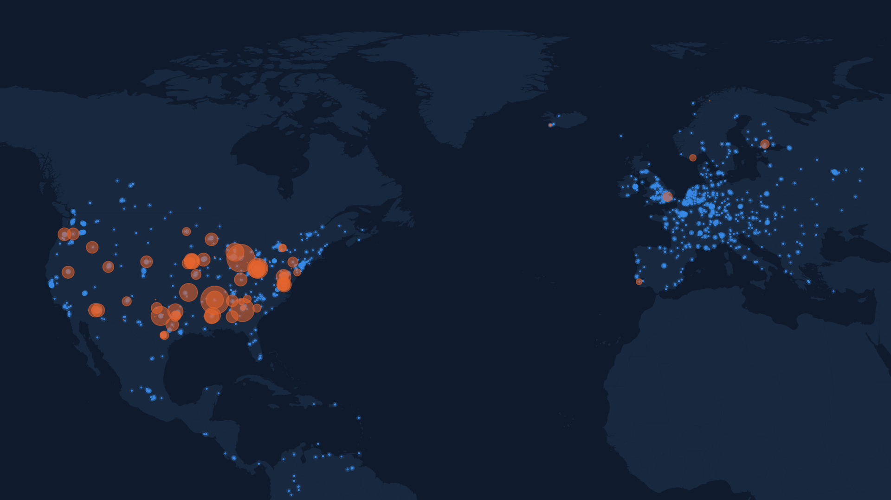
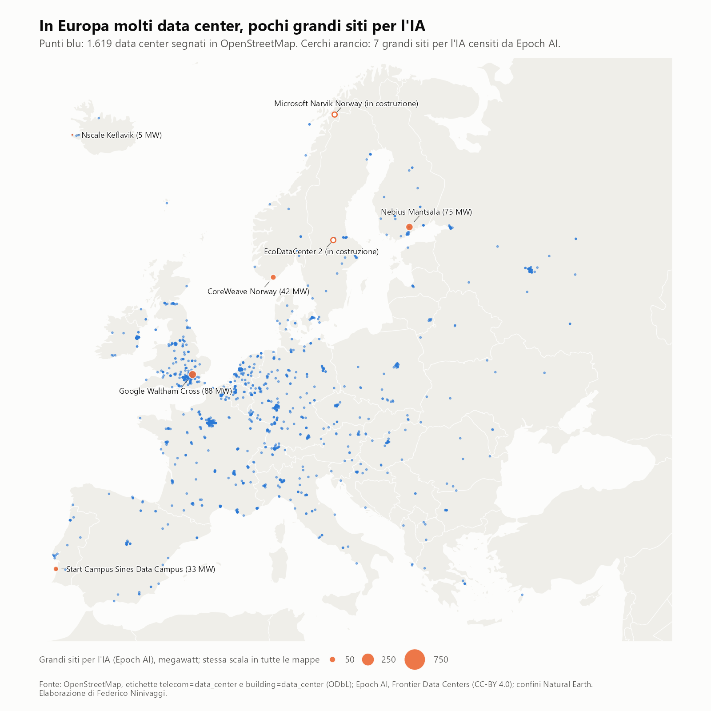
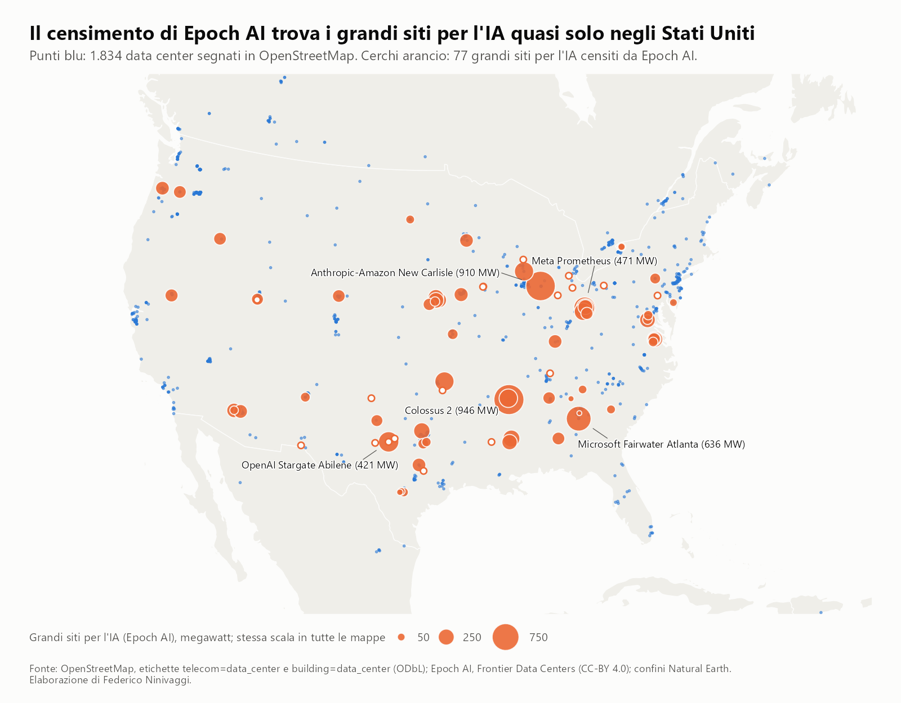
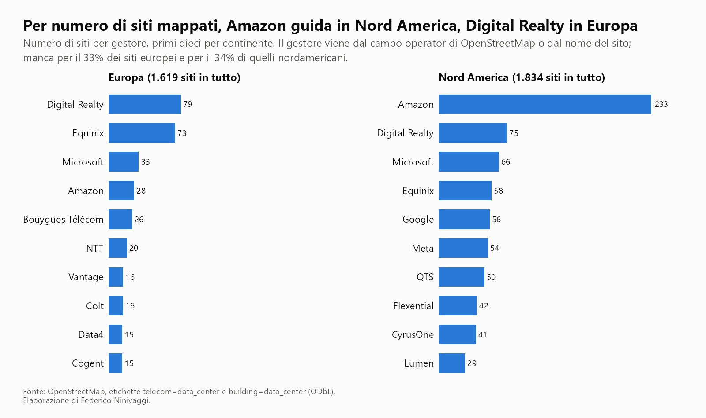
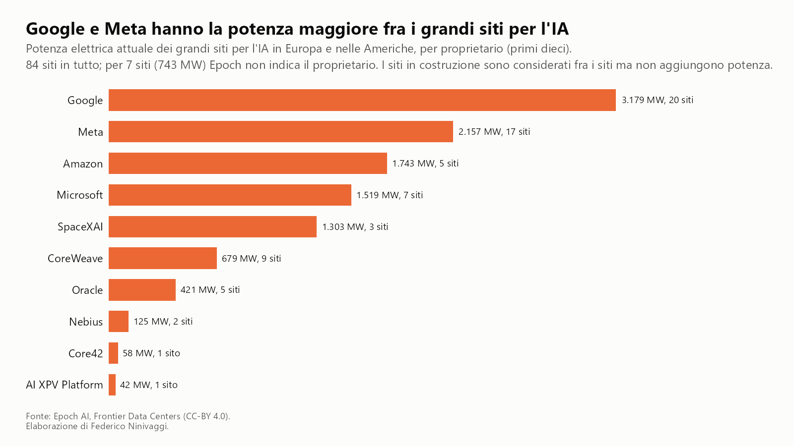

Dove è localizzata l’infrastruttura dell’intelligenza artificiale
Nº 02 · long read · 5 ott 2026
Dove è localizzata l’infrastruttura dell’intelligenza artificiale
Due mappe aperte, una tracciata da volontari e l’altra da un istituto di ricerca, localizzano i data center fra Europa e Americhe. I grandi impianti per l’IA si concentrano quasi interamente negli Stati Uniti, e nessuno appartiene a OpenAI o ad Anthropic, che pure figurano fra gli utenti di un terzo di essi.
Intelligenza artificialeTerritori
↩ torna a Long read
Due mappe aperte, una tracciata da volontari e l’altra da un istituto di ricerca, localizzano i data center fra Europa e Americhe. I grandi impianti per l’IA si concentrano quasi interamente negli Stati Uniti, e nessuno appartiene a OpenAI o ad Anthropic, che pure figurano fra gli utenti di un terzo di essi.
Degli 84 grandi data center per l’intelligenza artificiale che Epoch AI, un istituto di ricerca sullo sviluppo dell’IA, censisce fra Europa e Americhe, 77 si trovano negli Stati Uniti. Insieme possono assorbire 11.764 megawatt, l’85,6% della potenza elettrica di tutti i siti che il database registra nel mondo. In Europa i siti sono 7, con 243 megawatt in tutto. Il più grande, Google Waltham Cross, a nord di Londra, arriva a 88 megawatt; Colossus 2, il campus di Memphis in testa alla classifica, da solo vale 946 megawatt, 3,9 volte l’intera potenza europea censita. (1)
Il dato descrive la nuova infrastruttura dell’IA, che per numero di impianti è una parte relativamente piccola dei data center esistenti. Accanto ai giganti ci sono migliaia di strutture più modeste che tengono in funzione siti web, caselle di posta elettronica, archivi aziendali e servizi di cloud. Per vederli occorre una seconda fonte. OpenStreetMap (OSM), la mappa disegnata da volontari e libera da riusare, ne conta 1.619 in Europa, 1.834 in Nord America e 163 in Sud America. (2)
Che cos’è un data center
Nel settore un data center si misura in megawatt prima che in metri quadrati. È un’infrastruttura industriale che converte energia elettrica in capacità di calcolo: migliaia di server sempre attivi, la cui crescita dipende dalla corrente che li alimenta e dal sistema che ne disperde il calore.
Nei siti costruiti per l’intelligenza artificiale il calcolo è svolto da GPU, chip sviluppati originariamente nel settore dei videogiochi, in grado di eseguire migliaia di operazioni nello stesso istante. Nell’IA la loro potenza è utilizzata in due momenti. Nell’addestramento un modello impara, per settimane, da enormi quantità di testo; nell’inferenza risponde alle domande di chi lo usa. Epoch esprime il calcolo di ogni sito in «H100-equivalenti», il numero di chip Nvidia H100 che occorrerebbe per ottenere la stessa potenza di calcolo. (3)
Il peso di questi siti sulla rete elettrica è già visibile. Secondo l’Agenzia internazionale dell’energia (IEA), nel 2024 i data center hanno consumato 415 terawattora, l’1,5% dell’elettricità consumata nel mondo; un terawattora corrisponde a un miliardo di kilowattora. Entro il 2030 il consumo dovrebbe più che raddoppiare, fino a circa 945 terawattora. Un data center tipico per l’IA consuma quanto 100.000 famiglie, e i più grandi oggi in costruzione consumeranno 20 volte tanto. Nel 2024 gli Stati Uniti da soli assorbivano il 45% dei consumi mondiali dei data center, tre volte la quota europea. (4)
Due fonti per due strati
Le due fonti qui utilizzate misurano cose diverse, e in un certo senso si completano. OpenStreetMap registra dove si trova un edificio, il poligono che ne disegna l’impronta a terra e, quando un volontario l’ha inserito nel tag, chi lo gestisce: il gestore è indicato per circa due siti su tre in Europa e in Nord America. La potenza non è registrata. Epoch ne riporta una stima, ricavata dalle immagini satellitari e dai documenti pubblici, come i permessi edilizi e ambientali, e indica per ogni sito il proprietario e gli utenti. Il database però, nelle parole dei suoi autori, «mostly consists of data centers in the United States»: dei 93 siti nessuno è localizzato in Canada o in America Latina, ed Epoch stima di coprire il 43% del calcolo per l’IA installato nel mondo. (5)
Europa: tanti piccoli siti attorno alle grandi città
In Europa i data center di OpenStreetMap si addensano attorno a poche città. Nel raggio di 50 chilometri dal centro di Londra se ne contano 147, attorno a Parigi 142, a Francoforte 113 e ad Amsterdam 69. Le quattro aree raccolgono il 29% dei siti europei. Sono edifici di taglia contenuta: l’impronta mediana di un sito europeo è di 3.095 metri quadrati, quella di un sito nordamericano di 10.646 metri quadrati, 3,4 volte tanto. (6)
I grandi siti per l’IA seguono un’altra geografia. Dei 7 censiti da Epoch in Europa, 5 si trovano fra Norvegia, Svezia, Finlandia e Islanda, lontano dai poli dove si addensano gli altri impianti, e due sono ancora in costruzione. Una spiegazione plausibile risiederebbe nella maggiore disponibilità di energia idroelettrica e nel clima più freddo, in grado di abbassare il costo del raffreddamento.

Stati Uniti: i giganti nell’interno
Negli Stati Uniti anche i siti di OpenStreetMap si raccolgono attorno a pochi poli, e il primo è Ashburn, in Virginia, con 302 siti nel raggio di 50 chilometri: più di Londra e Parigi messe insieme. I grandi siti per l’IA si distribuiscono invece verso l’interno del paese, spesso lontano dai poli storici. I due più potenti sono Colossus 2, a Memphis, con 946 megawatt, e Anthropic-Amazon New Carlisle, in Indiana, con 910 megawatt. Il secondo porta nel nome i due gruppi coinvolti: lo possiede Amazon e lo usa Anthropic. (7)

Chi li gestisce
In Europa i gestori con più siti sono Digital Realty, con 79 siti, ed Equinix, con 73 siti: due società che affittano spazi attrezzati ad altre aziende. Insieme gestiscono il 14% dei siti europei con un gestore noto. In Nord America la classifica è guidata da Amazon, con 233 siti, davanti a Digital Realty con 75 siti ed Equinix con 58 siti. (8)
Il primato di Amazon va letto con cautela, perché il conteggio misura quanti edifici i volontari hanno mappato e non quanta capacità abbia il gruppo. Dei 233 siti di Amazon, 118 si trovano entro 50 chilometri da Ashburn, il 51%, in un distretto mappato edificio per edificio. Il dettaglio della mappatura pesa quanto la dimensione: dieci capannoni disegnati separatamente valgono dieci siti, e la capacità che un gruppo prende in affitto presso un operatore terzo figura sotto il nome del locatore.

Chi li possiede e chi li usa
Fra i grandi siti per l’IA, i proprietari con più potenza sono Google, con 3.179 megawatt in 20 siti, e Meta, con 2.157 megawatt in 17 siti; seguono Amazon e Microsoft. Nessuno degli 84 siti fra Europa e Americhe appartiene a OpenAI o ad Anthropic, i laboratori che sviluppano ChatGPT e Claude. L’uno o l’altro compare però fra gli utenti di 28 siti, che valgono 5.355 megawatt, il 45% della potenza censita fra Europa e Americhe. Epoch indica spesso gli utenti come stima probabile, e la cifra va letta come ordine di grandezza. (9)
Chi usa un data center senza possederlo lo paga con contratti di calcolo o di affitto pluriennali, e sono questi contratti a reggere la costruzione. Il loro peso nei bilanci dei grandi gruppi tecnologici è un tema che merita un approfondimento a parte; le prime evidenze danno però la misura: a metà 2026 Alphabet, Amazon, Meta, Microsoft e Oracle dichiaravano affitti di data center firmati e non ancora cominciati per 1.090,5 miliardi di dollari, più del triplo dei 325,7 miliardi di obbligazioni che quattro di loro avevano collocato in ventuno mesi. (10)

I limiti dei dati disponibili
OpenStreetMap è completa quanto i volontari che vi contribuiscono, e un paese poco mappato può sembrare vuoto anche quando in realtà non lo è. I due strati, poi, si sovrappongono appena: solo 30 dei 49 siti di Epoch localizzati all’indirizzo hanno un data center di OpenStreetMap entro due chilometri, questo probabilmente perché i campus più recenti mancano spesso dalla mappa OSM. (11) L’area, infine, misura l’impronta a terra e non la potenza: un edificio largo e basso può ospitare meno potenza di uno più piccolo.
Si potrebbe obiettare che il divario fra Stati Uniti ed Europa nasca dal censimento più che dalla geografia, dal momento che Epoch censisce soprattutto i siti americani. L’obiezione può gonfiare la misura del divario. La direzione regge, visti anche i dati dell’IEA, raccolti con un altro metodo e su tutti i data center, che assegnano agli Stati Uniti consumi tre volte quelli europei.
Per l’Europa la mappa suggerisce una lettura. La rete dei data center è fitta attorno a Londra, Parigi, Francoforte e Amsterdam, e i pochi grandi siti per l’IA censiti da Epoch sorgono quasi tutti lontano da quei poli, e il maggiore arriva a 88 megawatt. Chi dovesse decidere come attrarne altri potrebbe guardare meno alla densità della rete esistente e più alla disponibilità di energia e di terreni, che i siti nordici sembrano avere in comune.
Note e fonti
Epoch AI, Frontier Data Centers, file data_centers.csv, aggiornamento del 2 ottobre 2026, colonne Current power (MW), Country, Owner, Users; licenza CC-BY 4.0. La potenza è quella attuale: i siti in costruzione restano nel conteggio dei siti ma hanno potenza nulla. Gli indirizzi sono stati trasformati in coordinate con Nominatim, il motore di ricerca degli indirizzi di OpenStreetMap; per i siti senza indirizzo leggibile la località è stata indicata a mano dai campi di Epoch o, in quattro casi, da fonti di stampa.
OpenStreetMap, oggetti con etichetta telecom=data_center o building=data_center, scaricati con Overpass il 5 ottobre 2026; © OpenStreetMap contributors, licenza ODbL. Un punto dentro un poligono e un poligono dentro un altro contano come un solo sito. Paesi e continenti dai confini di Natural Earth (scala 1:50 milioni); il Centro America e i Caraibi rientrano nel Nord America.
Epoch AI, documentazione del database, sezione Methodology: «we express it in H100-equivalents (H100e): the number of Nvidia H100 GPUs that would be required to match the performance». https://epoch.ai/data/data-centers-documentation/methodology
IEA, Energy and AI, Executive summary: «Data centres accounted for around 1.5% of the world’s electricity consumption in 2024, or 415 terawatt-hours (TWh). The United States accounted for the largest share of global data centre electricity consumption in 2024 (45%), followed by China (25%) and Europe (15%).»; «Data centre electricity consumption is set to more than double to around 945 TWh by 2030.»; «A typical AI-focused data centre consumes as much electricity as 100 000 households, but the largest ones under construction today will consume 20 times as much.» https://www.iea.org/reports/energy-and-ai/executive-summary
Epoch AI, sezione Methodology: «We then analyze commercial satellite imagery, and any available permitting documents and company disclosures, to research key details about a data center»; «The database mostly consists of data centers in the United States, but coverage is expanding globally»; la copertura del calcolo installato è stimata al 43% al 5 ottobre 2026, con un intervallo al 90% fra 23 e 81.
Conteggi dei siti OpenStreetMap entro 50 km dal centro di ciascuna città. L’area è la superficie del poligono disegnato, cioè l’impronta a terra dell’edificio o del recinto e non la somma dei piani; la mediana è calcolata sui siti disegnati come poligono.
Epoch AI, data_centers.csv: per Anthropic-Amazon New Carlisle il proprietario è Amazon e l’utente Anthropic.
Il gestore viene dal campo operator (o owner) di OpenStreetMap o, in mancanza, dal nome del sito. I gruppi sono unificati con un dizionario fisso che tiene conto delle acquisizioni, per esempio Interxion in Digital Realty. I siti senza gestore sono esclusi dal conteggio dei gestori.
Epoch AI, colonne Owner e Users. Per 7 siti fra Europa e Americhe il proprietario non è indicato. Fra gli utenti Epoch distingue con un’etichetta i casi certi da quelli probabili o ipotetici; il conteggio li comprende tutti.
Elaborazione dell’autore sui bilanci depositati presso la SEC, l’autorità di vigilanza della Borsa americana: note dei rapporti annuali (10-K) e trimestrali (10-Q) al 30 giugno 2026 (Oracle al 31 maggio 2026), voce degli affitti firmati e non ancora cominciati; prospetti di emissione 424B2 e 424B5 per le obbligazioni di Alphabet, Amazon, Meta e Oracle. Microsoft non ha emesso obbligazioni nel periodo.
Il confronto fra i due strati riguarda solo i 49 siti di Epoch localizzati all’indirizzo, perché la posizione ricavata dalla sola località è troppo approssimativa per una distanza di 2 chilometri. Un sito è considerato presente in OpenStreetMap se un data center della mappa si trova entro quella distanza.
Uscito su LinkedIn il 5 ottobre 2026: l’articolo originale.
Federico Ninivaggi · 5 ottobre 2026